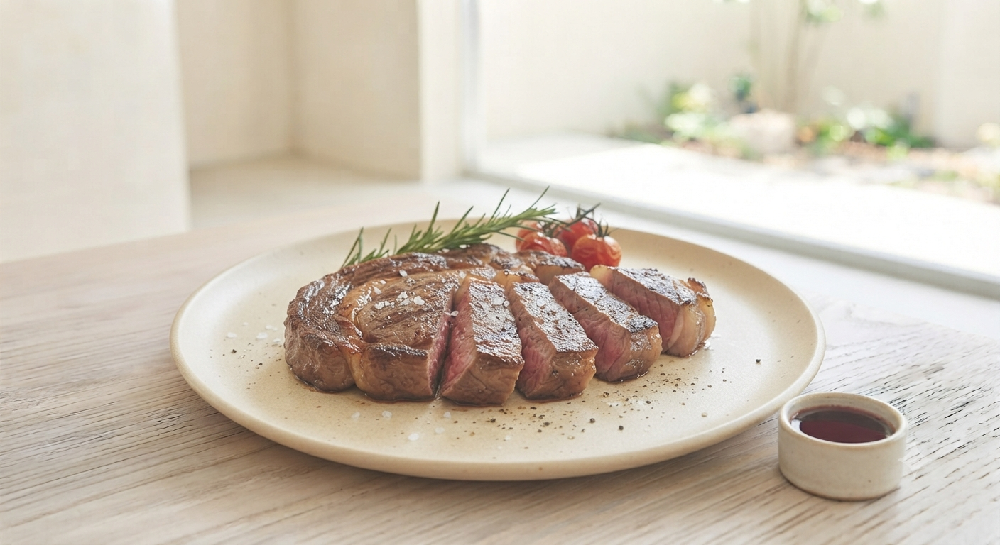
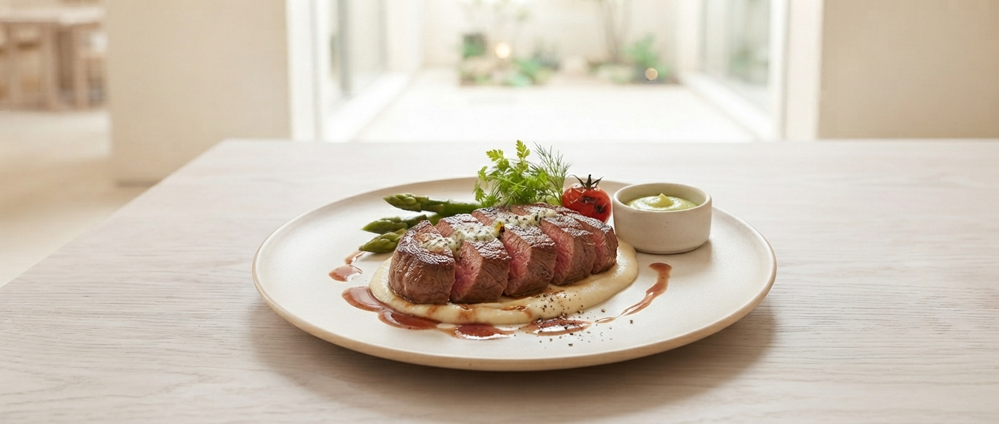

店主・十良淵健二
2018年。北上市の静かな住宅街に、一軒の鉄板焼き屋が産声を上げました。店名は「小春日和」。
「お客様に幸福なひと皿を届けたい」という一途な思いで、毎日カウンターの前に立っています。
岩手の豊かな土壌が育んだ食材。それを最高のタイミングで焼き上げる。派手な演出だけでなく、食材への敬意を込めた一皿をお楽しみください。


溢れる肉汁、
弾ける香り。
鉄板の上で鮮やかに焼き上げられる九州産A4黒毛和牛。
立ち昇る香ばしい香りと、肉が焼ける心地よい音。
料理人の手さばきを目の前で楽しむ特等席が、あなたの日常を少しだけ特別なものに変えます。
最後の一切れまで、感動の連続を。
生産者の顔が見える仕入れ。岩手の旬を活かした、その時期一番のメニューをご提案します。
旨みの豊かな赤身肉や、とろけるサーロイン。厳選された最高級の肉質を焼き上げます。
閑静な住宅街に佇む一軒家。夫婦のお祝いや大切な記念日に最適な落ち着いた雰囲気です。
お客様の声から生まれた、次なるおもてなしの構想。
「初めて来たけれどどれを頼むべき？」「今日はとにかくがっつりお肉を楽しみたい！」そんなお客様の気分やシチュエーションに合わせて、その日の最適解をエスコートする新しいご案内システムを準備中です。
お店の魅力を余すことなく体験できる、店主イチオシの王道コースや定番ランチの組み合わせをスムーズにナビゲート。
お肉のボリュームアップや、ジューシーな肉汁を心ゆくまで堪能できる満足度抜群のボリューム特化メニューをピンポイントで提案。
毎年、記念日に訪れてくださるお客様の声を集めました。
「最後の一切れのお肉を頬み込むのがもったいないなんて思ってしまいました。妻の誕生日でしたが、自分も日常から解き放たれました。」
「目の前でパンも鉄板で焼くのはビックリ！胡麻のドレッシングや、ももすけ（赤かぶ）のスープなど、全てにおいて大満足です。」
2018年。北上市の静かな住宅街に、一軒の鉄板焼き屋が産声を上げました。店名は「小春日和」。
「お客様に幸福なひと皿を届けたい」という一途な思いで、毎日カウンターの前に立っています。
岩手の豊かな土壌が育んだ食材。それを最高のタイミングで焼き上げる。派手な演出だけでなく、食材への敬意を込めた一皿をお楽しみください。
Reservation & Access
24時間受付（フォーム）
WEBから予約TEPPANYAKI 小春日和
〒024-0012 岩手県北上市常盤台１丁目２５−１６
定休日
日曜日・月曜日